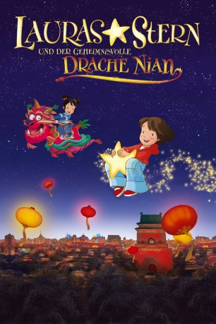

#9254 Lauras Stern und der geheimnisvolle Drache Nian
 gesehen am 20.07.2018
gesehen am 20.07.2018
 
 IMDB-Wertung: 6.0 / 10
IMDB-Wertung: 6.0 / 10  Metascore: 0
Metascore: 0 
Laura darf mit ihrer Familie nach China fliegen, denn ihre Mutter soll zum Neujahrsfest zusammen mit chinesischen Musikern ein Konzert geben. Laura ist schon ganz aufgeregt. Zum Glück begleitet sie ihr bester Freund, der kleine Stern, aber auf dem Flug geht er verloren. Ein chinesisches Mädchen, Ling-Ling, findet den Stern und nimmt ihn mit. Der Stern führt nicht nur die beiden Mädchen zusammen. Ohne dass er es merkt, macht sein Sternenstaub auch ein Wesen lebendig, das sich rasch mit den Kindern anfreundet: der geheimnisvolle Drache Nian. Während Lauras Mutter auf der Bühne steht, erleben die Mädchen gemeinsam mit Nian ihr größtes Abenteuer …
Jahr: 2009
Dauer: 75 Minuten
FSK: 0
Land: Deutschland Studio: Warner Bros.Tonspuren: DD5.1 - ,
Untertitel: Deutsch,
Auflösung: 1080p (1920x1080) Größe: 2795 MB
Genre: Animation/Trick, Familie
Regisseur: Piet De Rycker, Thilo Rothkirch
Drehbuch: Klaus Baumgart
Soundtrack: Guy Cuyvers, Henning Lohner
Darsteller:
 Heinrich Schafmeister als Lauras Vater
Heinrich Schafmeister als Lauras Vater- Heiko Obermöller als Zimmerservice
 Andrew Lin als Rezeptionistin
Andrew Lin als Rezeptionistin- Annabel Wolf als Laura
- Mariann Schneider als Ling-Ling
- Dirk Bach als Nian
- Sandro Iannotta als Tommy
- Brit Gülland als Mutter
- Gregor Höppner als Ling-Lings Vater
- Dagmar von Kurmin als Ling-Lings Oma
- Viktor Weiss als Ling-Lings Opa
- Susanne Dobrusskin als Tante
- Martin Reinl als Minihase
- Philipp Schepmann als Minibär
- Kerstin Fischer als Gepäckkontrolle
- Katja Liebing als Garderobiere
- Mirja Regensburg als Garderobiere
- Emmanuel Zimmermann als Pilot
- Hans Bayer als Dirigent
- Luca Kämmer als Junge
- Ricardo Rausch als Junge
Datei: X:\Kinder Collections\Lauras Stern\Lauras Stern und der geheimnisvolle Drache Nian (2009, FSK0, 1920x1080).mkv seit 20.07.2018
Festplatte: Kinder-Filme+Trick
 Alle Filme aus Gruppe 'Kinder Collections\Lauras Stern'
Alle Filme aus Gruppe 'Kinder Collections\Lauras Stern'